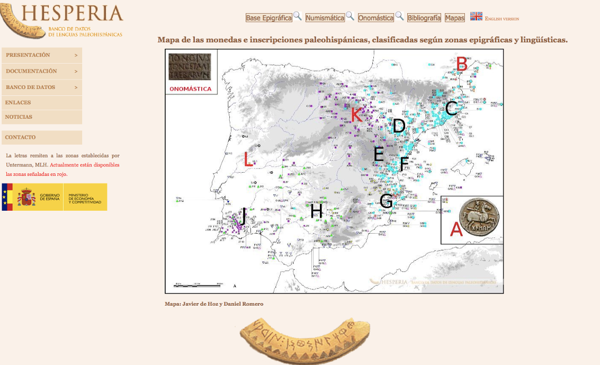
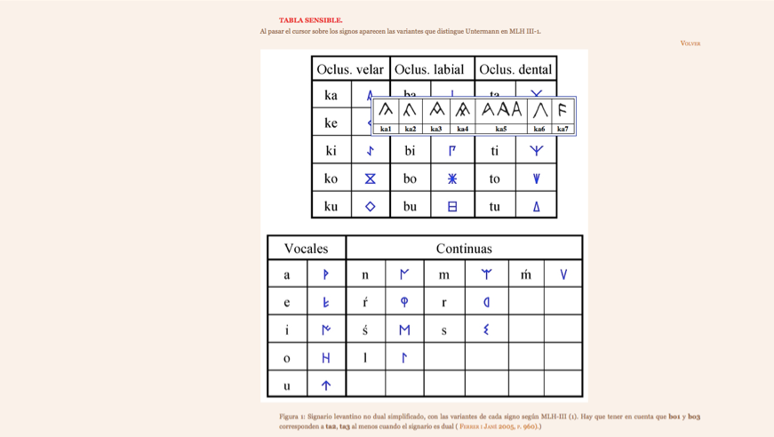
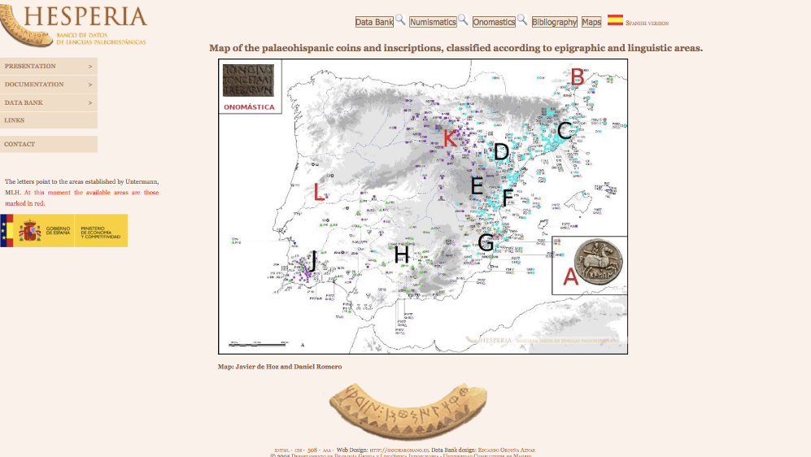
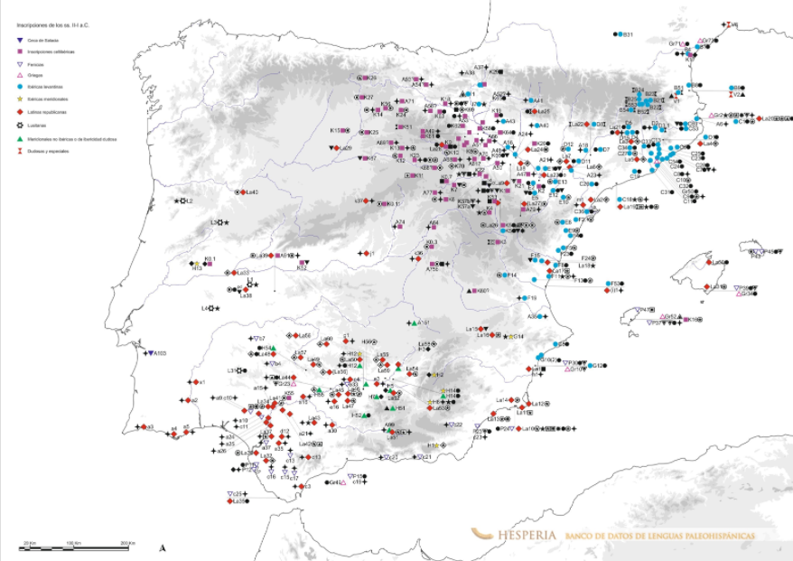
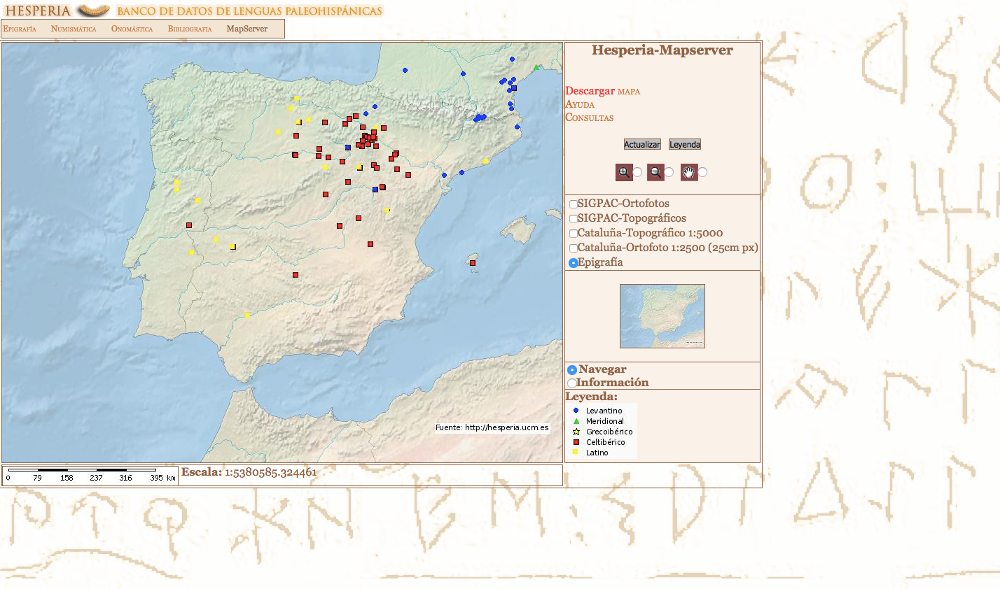
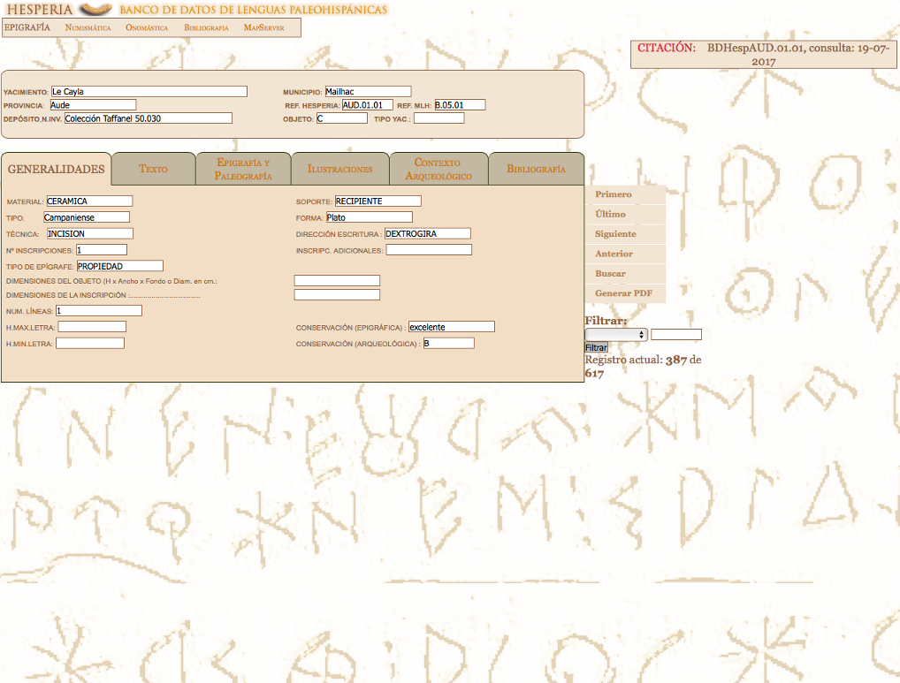

Hesperia
Table of Contents
Abstract
The Hesperia project makes available worldwide a corpus of Paleohispanic inscriptions coming from the Iberian Peninsula that were never accessible to this extent in an online format before. As a collaborative effort of several Spanish universities, the resource constitutes a useful tool for Classic linguistic researchers, also suitable for archaeologists and historians due to the character of the material that it compiles. Epigraphic inscriptions and coin legends are provided as well as metadata and documentation about the resource. Despite Hesperia describes itself as a databank, this review opens a discussion about its typology for considering this an interesting question to reflect on, regarding the current debate on the digital paradigm. Since Hesperia was conceived in the late 1990s, there is scope enough for improvement both regarding the database interface and the software that lies behind it. Other possible implementations regarding data management, interoperability and contextualisation are also considered through the possibilities offered by Linked Open Data technologies.
Introduction
Despite being the cradle of an extensive amount of numismatic and epigraphic evidence for Paleohispanic languages, the Iberian Peninsula has been somewhat neglected by international scholarship. Only local scholars have shown an interest in the study of Paleohispanic languages in Spain, and Classics specialists outside the peninsula seem to be less informed on this subject. This situation could be due to the lack of research produced in the English language by Spanish scholars as well as the lack of promotion of the exceptionally rich record that the peninsula preserves. The landscape is now starting to change as the result of the effort made by initiatives such as the Hesperia Project. This resource makes available worldwide a huge corpus of inscriptions and coins never accessible to this extent before.1

The leading objectives of Hesperia are the collection, regulation and processing of all the linguistic materials from the Iberian Peninsula and some specific areas in the south of France (because of their relation to Spain) produced by the indigenous communities before and after the Roman arrival. This includes not only the epigraphic material but also glosses, indigenous onomastics and numismatic inscriptions. At the time of its conclusion, the resource aims to include and make accessible:2
- All the available texts written in Paleohispanic languages (Iberian, Celtiberian, Lusitan and the south-west variants).
- Paleohispanic coin legends.
- Indigenous onomastics (place names, people names, group names, and divine names in the languages mentioned above as well as the Turdetanian and Vasconic) which have been transmitted in epigraphic or literary Greco-Latin sources.
- Hispanic glosses diffused by ancient authors.
History of the project
It was in 1997 in the Department of Greek Philology and Indo-European Linguistics at the Universidad Complutense de Madrid, when the Professor Javier de Hoz started the Hesperia Project in collaboration with other universities mentioned above (Luján 2005). The main objective was the creation of a comprehensive electronic corpus capable of making available all the linguistic records of Paleohispanic languages in the peninsula except for the Latin, Greek and Phoenician epigraphy.
It is unlikely that the creators of Hesperia could have pictured the possibilities that their work could offer in a near future when Hesperia was envisaged. At that time, the discipline of Digital Humanities was just starting to lay its foundations in Spain, and the first publications were coming out. In 1994 Francisco Marcos Marin had just published the first work on Computing and the Humanities in Spain. This volume was followed by other isolated projects mainly focused on philological research but also looking at bibliographic and multimedia studies. Some of these, such as the Biblioteca Virtual Miguel de Cervantes3 and the Spanish Royal Academy´s CORDE and CREA4 projects were mainly motivated by the innovations in relational database technology and electronic mark-up (Spence 2014). As a product of this momentum in digital research, combined with the new approaches towards Roman archaeology, the interest in Roman epigraphy and the applications of digital technologies in text mining, the two main Spanish databases in the discipline of Classical Studies were set up: the Hesperia Project and Hispania Epigraphica.5 Although Hispania Epigraphica is not part of the Hesperia Project it should be taken into consideration when understanding the reasons behind the foundation of Hesperia.
Hispania Epigraphica6 started as a journal focused on the revision of ancient inscriptions included in the Corpus Inscriptorum Latinarum (CIL II)7 as well as the publication of new findings, corrections or interpretations of inscriptions from Spain and Portugal written in the Latin and Greek alphabets. This endeavour later motivated the creation of a homonymous online database to collect all the Latin inscriptions found on the peninsula. Whereas Hispania Epigraphica is focused on Latin inscriptions, the Hesperia Project on the other side, aims to gather all the ‘indigenous production’: the inscriptions produced by the native inhabitants of the Iberian and Greek territories both before and after the Roman arrival. The two databases together comprise an essential collection of digital text that over time have become a fundamental tool for any researcher interested in the fields of classics, Roman history and Roman archaeology.
Aims
The main objective of Hesperia is stated as the collection, organisation and processing of all the ancient linguistic material related to the Iberian Peninsula and other zones of influence such as the south of France not including the Latin, Greek and Phoenician inscriptions. The overall purpose is the study of Paleohispanic languages in the Iberian framework. Over time, Hesperia has been developed as the product of successive projects for the investigation of Paleohispanic languages.
The original Hesperia project was funded by the Ministry of Science and Investigation within the 2012 project framework called “Linguistic and Epigraphic Studies on Paleohispanic languages" (FFI2009-13292-CO1-3). This research project brought together scholars from different disciplines such as ancient history, linguistics and epigraphy, and all Celtiberian inscriptions and those coming from the South of France were included. These are represented by the letters B and K in the map that appears as part of the search interface (Fig. 1).8 During this project, the database was also improved and enriched with new material such as Paleohispanic coin legends and indigenous personal names. The search tool was also implemented and a map server was developed.9
The main purpose was to extend the general understanding of various linguistics and epigraphic aspects of the inscriptions. While the linguistic endeavour focused on the nominal formation both of Celtiberian and of Iberian languages as well as the creation of an Iberian lexicon – still to be introduced – the epigraphic aspect focused on Paleohispanic Iberian coin legends and other Paleohispanic inscriptions. Today, the Hesperia Paleohispanic languages database is part of a successively updated endeavour in the framework of the Paleohispanic Linguistic and Epigraphic Studies: Cultural and Linguistic Contexts (ELELP II) project, under the direction of Joaquín Gorrochategui which – as the site tells us – ran from 01/01/2013 to 31/12/2015. Within this endeavour, the website also states three subprojects:
- Aquitanian and Iberian onomastics: linguistic data and Evaluation. Chief researcher: Joaquín Gorrochategui. FFI2012-36069-Co3-01.
- Nominal morphology studies: Paleohispanic and ancient Indo-European languages. Chief researcher: Eugenio R. Luján Martínez FFI2012-36069-Co3-02.
- The birth of epigraphic cultures in the Western Mediterranean (II-I c. BCE). Chief researcher: Francisco Beltrán Lloris. FFI2012-36069-Co3-02.
This macro project looks mainly at the development, implementation and maintenance of the database as well as the introduction of new material from Cataluña, the Levant and the meridional area with the aim of constructing the most exhaustive and scientifically assessed collection of the total of the Paleohispanic material on the peninsula. In addition, the aim is to correct former mistakes, complete archaeological data especially related to the context of the finds and enrich the geographical information and the illustrations. Other aims of this project are the contextualisation of the Iberian data by typological comparison with other languages that show similar structural features, the investigation of non-Indo-European onomastics and the recording of ‘external’ data regarding the onomastics.10
Finally, this project also aims to look at the Paleohispanic epigraphy from the point of view of the epigraphic culture in the Western Mediterranean from the 2nd to the 1st century BC. This will promote the study of the Mediterranean pre-Roman epigraphy in three specific areas: south of Gaul, north of Africa and Italy with all the Osco-Sabelic inscriptions and some Etruscan examples. Hesperia comprises a wide variety of languages; however, the difficulty is increased by the writing system in which these languages are recorded. The scripts used in the recording of the paleohispanic languages comprise semi-syllabic writings originating in the peninsula as well as colonial alphabets such as Greek and Latin. This variety of resources is detailed on the Hesperia website within the ‘scripts’ section, where the user can find four sensitive tables that display the different writings and the varieties of each sign (Fig. 2).

- Glosses in classical texts that include Hispanic words.
- Names: anthroponyms, theonyms, toponyms and ethnic denominations.
- Paleohispanic coin inscriptions.
The database is configured according to a series of interrelated collections: Epigraphy, Numismatics, Onomastics, Lexicon and Bibliography. These sections are already accessible except for the lexicon which is still under construction as well as some sections of the bibliographic and onomastic tables. The aim is to update the record continuously allowing the introduction of new material, metadata or other commentaries.11 Nevertheless, only a small part of the overall content appears to be currently publicly accessible. As can be seen in Fig. 1., only four areas are available (represented by the letters A, B, K and L) from a total of eleven zones.
Methods
Hesperia has been designed following the rationale established by the four main sub-collections. These are available via four browsers at the top of the main menu under the titles ‘Epigraphy’ (data bank in the English version), ‘Numismatics’, ‘Onomastics’ and ‘Bibliography’ together with a direct link to the maps section that allow the user to directly access a specific section of the database. The collection contains both inscriptions and coin legends coming from the whole of the peninsular territory. Although the database is not yet complete, the main objective is to make available the whole corpus of Paleohispanic inscriptions (including onomastics, toponyms and glosses) and coin legends. The different types of inscriptions that this collection comprises are classified and explained within the ‘Presentation’ link in the main menu.
Each of the collection sections includes an introductory menu that explains its contents. There is also a clarification of the criteria followed in the classification of the inscriptions together with the different approaches towards the distribution of the collection and the main sources consulted, the Monumenta Linguarum Hispanicarum by J. Utermann being one of the most cited. Although Hesperia provides enough documentation about the objectives, the types of inscriptions, the languages and the scripts in which these were recorded, there is no metadata regarding the total number of inscriptions included nor the number of items that are still to be added. This makes it difficult for the user to get a complete picture of the collection and the current state of the project.
Due to the character of the assemblage, it is easy to imagine a number of difficulties that the Hesperia team might have encountered in the development of such a complex enterprise. Most of these are collected in the publications section within the consecutive papers that the Hesperia team has published regarding the developing of the database. However, these are not stated in any of the explanatory menus that the website displays. For future developments, it would be interesting to include a section on the progress of the project from the first steps to the current state and the impediments that the team has faced in the collection and digitisation of the inscriptions.
The main sub-collections present a similar number of entries and are interrelated by theme and coverage. As an example, the epigraphic collection of Celtiberian inscriptions is related to the Celtiberian items in the numismatic section (especially regarding the language and script). Nevertheless, these have been settled in different sub-collections due to the inscription´s format and nature. The dataset has been built up by the transcription of the textual data coming from different sources. The material has been contrasted and assessed before its publication and every entry has a bibliography. In addition, Hesperia provides a description of the archaeological context in which the specimen was found, a feature especially interesting for archaeological research.
Hesperia aims to collect all texts written in Paleohispanic languages except for Latin, Greek and Phoenician. Extending this sample and including more Paleohispanic texts could support quantitative research and this type of analysis could also be implemented with GIS to visualise the results of the queries developed on the data. The quantity of data collected by Hesperia as well as the nature of this data – epigraphic inscriptions written in Paleohispanic languages – make it a collection with a huge potential for future research. Nevertheless, although being in a digital format, the information is still hardly accessible. The data is provided on screen in HTML and only downloadable in PDF format. This allows the researcher to get access to specific files, but makes it difficult to access the whole of the dataset, diminishing the possibility of computational analysis by others. In addition, Hesperia is not connected to any other related resources. This makes it difficult to assess the quality of the information since it cannot be contrasted with other information outside the database but, even more, it diminishes the research potential of the collection.
Recent decades have seen a discussion on the difficulties that data management can lead to in big datasets such as Hesperia. Traditional ways of collecting digitised data and making it available online have limitations both in the processing of the information and the querying of the data. If appropriate measures are not taken to prevent it, in many of the cases, digital collections can become isolated ‘silos’ of decontextualised content not interoperable with other related resources. This, at the same time, impedes the discovery of new material, the disambiguation of information and the assessment of content. Linked Open Data (LOD) has proven to be a very successful technology to address this problem.
LOD is a low-cost technology that provides connections between data through statements following the subject-predicate-object formula and expressed using controlled Linked Open Vocabularies. The implementation of Hesperia with Linked Open Data standards could allow connections between Hesperia data and a broad range of resources that are already online as part of the Linked Ancient World Data community. The LAWD community is one of the leaders in the creation of Linked Open Data contents related to the study of the Ancient world. The inclusion of Hesperia´s contents in this community could provide a highly valuable resource for the study of the ancient world and enhance the presence and the importance of the Iberian Peninsula in this field.
The integration of Hesperia´s contents into LOD standards would allow the linkage of the information with several resources all over the world. This, at the same time, would provide more informative and contextualised data, thus exponentially increasing the value of the dataset. The fact that Hesperia only provides downloads in PDF diminishes significantly the possibilities to re-use the data. The conversion of the data into RDF and its publication online would allow the bulk download of the information and thus would exponentially increase the reutilisation of the data in successive projects.
Typology
There is quite a mature field concerned with digital editions where the boundaries and limitations of these resources have been discussed in contrast to other kind of tools like digital libraries, archives, text collections or corpuses (see Cohen et al. 2012, Schöch 2017, Henny and Schöch 2016 and Schreibman et al. 2011). Nevertheless, there is no homogenous or defined field regarding “text collections". Instead, scholarship considers it as a broad concept including a heterogeneous selection of resources and collections of texts (e.g. the mentioned linguistic corpora, digital archives etc.) (e.g. Unsworth 2011).
In order to discuss the quality of a specific resource it is also important to specify it typologically in order to assess it in comparison to other resources of the same type. This question is also interesting at the time of describing the resource, defining it, and specifying the features that make it differ from the rest. Having this in mind, it makes sense to discuss where Hesperia situates itself as well as building on other typologies that could be considered when defining the resource. In fact, it would be very beneficial and especially interesting for this work to consider the ambiguous nature of the resource and situate Hesperia in the broader ongoing discussion about the digital paradigm.
As a preliminary study, the initial aim was to compile some of the main features of either a text collection and a digital edition offered by the references quoted above among others, see what of these characteristics Hesperia satisfies better, and then conclude what type of resource it can best be described as. Nevertheless, it might be well the case that the classification is more complex than this. It has become necessary to deepen on the specific features of both text collections and digital editions, considering both possible typologies of Hesperia and then weight the outcome of these considerations against each other, also looking at the possibility that Hesperia could be both or neither of these options.
Scholarly digital editions offer critical representations of historical texts. Far from being just purely publications in a digital format, they follow specific methodologies to assess historical texts critically. This could easily be considered the main objective of Hesperia. The project contains a critical apparatus – which is a characteristic feature of digital editions – and it aims to display a complete representation of Paleohispanic full text records. Furthermore, Hesperia not only collects the language records of the peninsula but offers a critical paradigm towards the analysis of the text, regarding an academic research project. The resource offers documentation and meta information of the aims, the academic projects and the team. Although there is a lack of documentation regarding the methodology followed in the collection of the texts, several articles are made available regarding the scope of the collection, the main sources consulted, the development of the database and some of the technical impediments that the team has encountered.
Nevertheless, on the other hand, looking at the self-description provided as well as the purpose and future objectives of the collection, the Hesperia project could also be considered a digital text collection. Text collections comprise several different texts, as Hesperia does, and they encompass a broader scope than digital editions. DTC can be considered as inventories of specific types of textual sources that have been collected following a specific criterion, as for example is in Hesperia the study of Paleohispanic languages in the Iberian Peninsula. Hesperia embraces a complex database that includes and analyses various language varieties (e.g. Celtiberian, Iberian, Lusitanian) thus comprising several language corpuses. Language corpuses are a very specific type of text collection. They may be constructed according to internal features of the texts as well as external features (e.g. genre, authorship, date, variety). However, these assemblages do not necessarily describe a specific research scope like the one that Hesperia pursues.
Hesperia can be considered a digital edition because of its application of editorial methods like the critical apparatus and the palaeographic description. However, the resource is also enriched with further material that does not necessarily fit in the consideration of a digital edition. The aim of Hesperia is the study of the linguistic and epigraphic features of a collection of texts. Therefore, the content of the text collected is not as important as its linguistic component, a feature less common in digital editions.
In my opinion, because of all these reasons, the Hesperia project cannot be strictly considered a digital edition nor a linguistic corpus (as a specific kind of text collection). Instead, this resource should be considered a hybrid product that compiles characteristics from both categories. Therefore, it might well be the time to rethink our perception of the classification of these resources and consider the many different types of tools that should be included in this taxonomy. In the same way that Digital Humanities keeps updating and growing every day, our perception of this discipline should be equally updated and modernised considering the new varieties and resources.
User Interface
Hesperia was primarily developed using FileMaker software. Later, this was implemented into the LAMP platform in which the dataset lies today. This platform is constituted by a Linux operating system, Apache web server, MySQL system for relational databases and PHP programming language.
Some of the documentation related to Hesperia is easily reachable from the website. Here, in the index interface,12 there is a side bar with the navigation that provides the main links to the different sections. As it can be seen in Fig. 3, whereas the Spanish version of the site displays six different sections (Presentación, Documentación, Banco de datos, Enlaces, Noticias and Contacto), the English version only displays five of these indices as it is lacking the ‘News’ section, presumably because the information published here is written in Spanish. In the ‘Publications´ section there is a set of six articles written in English and Spanish by members of the Hesperia team. These papers collect the main information about the history of the database, the initial project and the subsequent developments. There is also a poster written in Spanish about the project that can be downloaded and used under a Creative Commons Licence.13 Nevertheless, the main ‘Documentation’ menu is still under development in both the English and Spanish versions.



When selecting one of the entries in the epigraphic dataset another interface comes up. This section contains a description of the entry on the top and a table organised into 6 columns: ‘Generalidades’, ‘texto’, ‘epigrafía y paleografía’. ‘ilustraciones’, ‘contexto arqueológico’ and ‘bibliografía’. These terms are not translated in the English version. In this section, the user is made aware of what content is being displayed by both the main description box and the ‘generalidades’ section as well as their position in the overall architecture of the dataset and how other contents can be accessed through the navigation bar on the top-left corner. Each of the tables provides a PDF generator that allows the download of specific files.
The ‘ilustraciones’ section in the table allows the user to click and zoom in the pictures displayed. These pictures are under a Creative Commons – NC licence. Nevertheless, there is no information provided about the licence on the content of the rest of the collection. The ‘texto’ section provides the critical apparatus of the text and it is complemented by the epigraphic and palaeographic section that provides useful observations on the inscription. In the archaeological context section, another table appears organised in several units giving the date of the text, the dating criteria, the context of the find and some observations. In this section, the archaeological context information is absent from most of the entries and in those in which it is displayed, it is not entirely useful since it is often reduced to comments like ‘rock two’ or ‘zone two’.

Although the numismatic section is treated as another sub-section of Hesperia, it could be considered as an individual collection by itself. Its purpose is the classification of all the Paleohispanic coin legends by mint. The objective is to provide the researcher with a tool capable of disambiguating and contextualising any individual word or legend. I find this collection to have the highest potential of development, especially with the introduction of LOD technologies. The application of LOD technologies to the study of Roman coins is already proving its efficacy in projects such Nomisma.org.14
Conclusions
In conclusion, Hesperia makes available an assessed and comprehensive corpus of Paleohispanic inscriptions from the Iberian Peninsula together with their archaeological context, their epigraphic and palaeographic analysis, and some bibliography. Although the final objectives have not been achieved yet, it succeeds in its innovative endeavour of putting together for the first time a collection of these features to give answer to a broad research question. Because of these reasons, the Hesperia project should not be considered a digital edition, nor a linguistic corpus, but a much complete resource of hybrid nature that allows the incorporation of intermingled features such as the ones mentioned above.
Having acknowledged the strengths of this resource, the implementation of Hesperia with Linked Open Data technologies should be strongly considered. LOD could exponentially enhance the visualisation of Hesperia as well as the reutilisation of the data and the positioning of Paleohispanic languages in current scholarship. Although the documentation section is still under development and the metadata could be extended, the resource is sufficiently documented and its aims and overall statement are well stated. While some of the tools should be implemented, the overall website is functional and accomplishes the general objectives regarding the data provided. Hesperia not only makes a fundamental contribution to the knowledge of Paleohispanic languages and the dissemination of the scholarship in this field; it also provides a fundamental tool to carry on further research.
Bibliography
- Cohen, Daniel J. and Joan Fragaszy Troyano (eds.). Closing the Evaluation Gap.Journal of Digital Humanities Vol. 1, No. 4, 2012. http://journalofdigitalhumanities.org/1-4/.
- Henny, Ulrike and Christof Schöch. How good are our texts, really? Quality assurance for literary texts from various sources [Blog post]. CLiGS, February 27th, 2016. http://cligs.hypotheses.org/371.
- MLH I: Untermann, J. Monumenta Linguarum Hsiapnicarum. Band I, Die Münzlegenden, Wiesbaden 1975.
- Luján, E.R. 'Hesperia. The electronic corpus of Paelohispanic inscriptions and linguistic records', Review of the national centre for Digitization (Belgrado), 6, 2005, 78-89.
- Schöch, Christof. Aufbau von Datensammlungen. Einführung in die Digital Humanities, edited by Fotis Jannidis, Malte Rehbein and Hubertus Kohle, Stuttgart, Metzler, 2017, pp. 223-233.
- Schreibman, Susan, Laura Mandell and Stephen Olsen (eds.): Evaluating Digital Scholarship" [Special section]. Profession, 2011, pp. 123-201. http://www.mlajournals.org/toc/prof/2011/1.
- Spence P. A historical perspective on the digital humanities in Spain, in: H-Soz-Kult, 2005. Accessed: 21/7/2017. Available at: http://www.hsozkult.de/debate/id/diskussionen-2449.
- Unsworth, John. Computational Work with Very Large Text Collections. Interoperability, Sustainability, and the TEI. Journal of the Text Encoding Initiative, issue 1, 2011. http://jtei.revues.org/215.
Notes
- Paula Granados is a PhD candidate at the Open University, Department of Classics. Her research focuses on the study of cultural contact and identity development in Early Roman Spain by means of the collection and creation of Linked Open Data. This study looks at the data available online collected by various repositories, data bases and digital editions. ↑
- http://hesperia.ucm.es/presentacion.php. ↑
- http://www.cervantesvirtual.com/. ↑
- http://corpus.rae.es/cordenet.html. ↑
- http://eda-bea.es. ↑
- https://revistas.ucm.es/index.php/HIEP. ↑
- http://cil.bbaw.de/cil_en/index_en.html. ↑
- The map is accessible at http://hesperia.ucm.es. ↑
- http://hesperia.ucm.es/proyecto_hesperia.php. ↑
- http://hesperia.ucm.es/actual.php. ↑
- http://hesperia.ucm.es/bancodatos.php. ↑
- http://hesperia.ucm.es/en/index.php. ↑
- The poster is accessible at http://eprints.ucm.es/8672/. ↑
- http://nomisma.org. ↑
@article{hesperia,
author = {Granados García, Paula Loreto},
title = {Hesperia},
journal = {RIDE – A review journal for digital editions and resources},
number = {7},
year = {2017},
doi = {10.18716/ride.a.7.2},
url = {https://doi.org/10.18716/ride.a.7.2},
}TY - JOUR
AU - Granados García, Paula Loreto
TI - Hesperia
T2 - RIDE – A review journal for digital editions and resources
IS - 7
PY - 2017
DA - 2017/12
DO - 10.18716/ride.a.7.2
UR - https://doi.org/10.18716/ride.a.7.2
PB - Institut für Dokumentologie und Editorik e. V.
LA - en
ER - Granados García, P. L. (2017). Hesperia. RIDE – A review journal for digital editions and resources, (7). https://doi.org/10.18716/ride.a.7.2Granados García, Paula Loreto. "Hesperia." RIDE – A review journal for digital editions and resources, no. 7, 2017. https://doi.org/10.18716/ride.a.7.2.Granados García, Paula Loreto. "Hesperia." RIDE – A review journal for digital editions and resources, no. 7 (2017). https://doi.org/10.18716/ride.a.7.2.